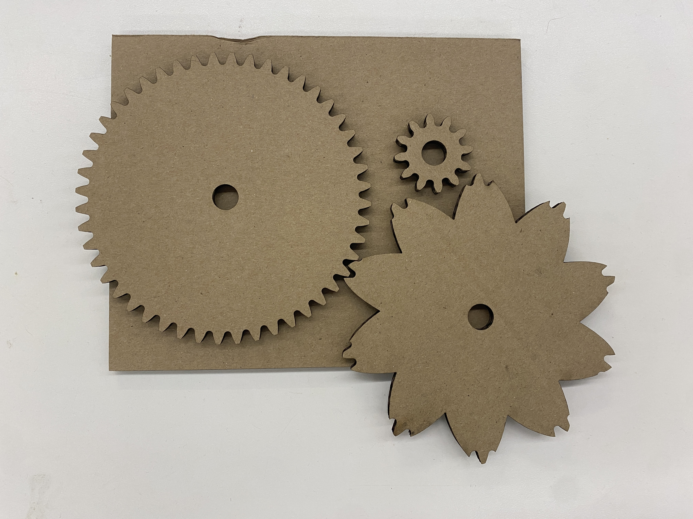

<div class="textcontainer">
<p class="margin"> </p>
<h3>Week 3: Hand Tools and Fabrication</h3>
<h4>Kinetic Sculpture</h4>
<p> This week, I attempted to make a kinectic sculpture of a rotating flower. While the structure is relatively straightforward and on the more simple end,
I still found the idea relatively challenging as someone who has never worked with motors nor designed anything off the cuff in Fusion. The process ultimately
ended up taking a few different iterations. </p>
<p> To start, I worked with a few new tools in Fusion this week. To create the gears, I added the spur gear from the utilities tab into my create options and learned about
gear modules for the first time.
Then, to create the flower cutout to go on top of the big gear, I used the fit point spline tool for the first time, drew out a petal, then created a circular pattern with it.
After lasercutting these pieces, I made a mount board and assembed them to create a smaller proof-of-concept device shown below. This was also when I realized that the default spur gear was set at the hole diameter of 12.77mm, which ended up being much too big.
There weren't really dowels or washers available to fit that size.

<img style = "width: 65%" src="./test_assembly.jpg" class="about-image">
</p>
<p>
As a result, for my second iteration, I upped the size of both gears as well as the flower cutouts, and decreased the hole diameter to 5mm. I also decided to cutout some petals to place on top of the big gear and that would be
supported by some rectangular cardboard pillars to give it a more 3D look.
<img style = "width: 65%" src="./3D.jpg" class="about-image">
Then, after consulting Bobby, I realized that to attatch the motor to the pinion gear, I would need to design an adapter piece in Fusion and laser cut it out.
I'd also need to cut a larger hole in the mount board to fit the adapter piece through, which I did using an exacto knife.
My first iteration of the adapter piece was just slightly too large: the motor didn't end up rotating the piece. As a result, for my second iteration, I decided to make the adapter piece smaller by 0.2mm on each dimension and test it again.
This time, the adaptor fit better but my project still wasn't working when the motor was attached directly to the mount board. I concluded that this was most likely because of the friction the cardboard pinion gear was experiencing against the cardboard
mount board, as well as the cardboard connector losing its shape with repeated use.
As a result, I laser cut out a new connector and pinion gear on plywood, then built a small structure with cardboard to hold the motor stable. When I plugged the motor into a power source,
I found that the project finally worked!! :D
</p>
<video src="./kinetic flower.mov"></video>
</div>